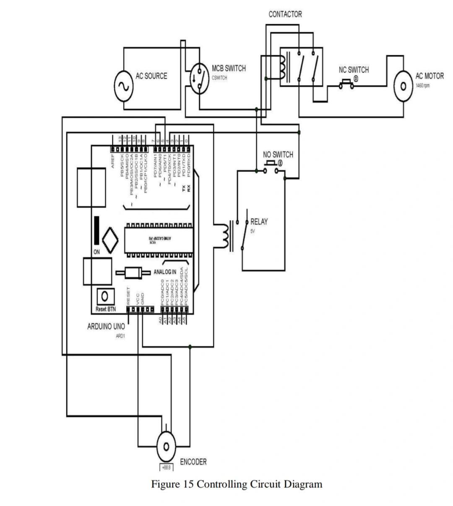
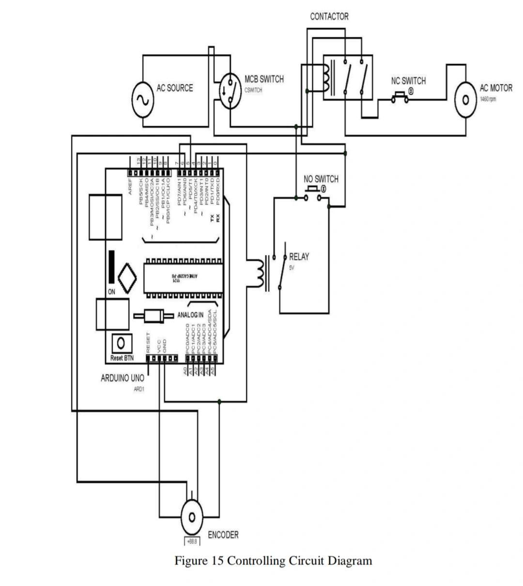
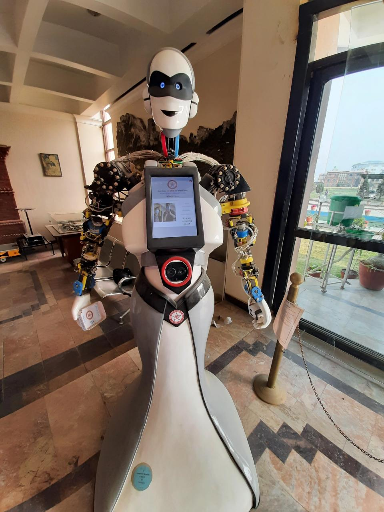

Projects
Machine Learning
Earthquake Damage Prediction
- Prediction of damage incurred by buildings due to 2015 Earthquake in Nepal.
- The damages are discretized into three class, in the raw data itself
- A machine learning project that provides a damage prediction with accuracy of 74.8%
- Associated With: Texas Tech University
RepositoryLink
Process Improvement
Enhancing Drilling Efficiency
- Optimization Using Meta-heuristics.
- Modeled the problem as a Travelling Salesman Problem (TSP).
- A machine learning project that provides a damage prediction with accuracy of 74.8%
- Optimized path of drilling tool using simulated annealing algorithm, and generated G-Code, reducing the tool path distance.

Statistical Data Analysis
Linear Regression of Real-Estate Data
- Associted With : Texas Tech University
- Linear regression analyis of real estate data to model property tax appraisal value using real estate parameters.
- Applied ANOVA and developed predictive model to suggest presence of overvaluation by $16500 on average.
- Associated With: Texas Tech University
For more info: rpubs.com/bishwa221/1040223

Digital Image Processing
Real-time Card Suit Recognizer
- Uses normal cross correlation for pattern matching.
VideoLink
Data Visualization
Visualizing Data in PowerBI
- Individual Project utilizing Microsoft Power BI.

Product Design With Quality Assurance
Smart Accessibility Cane
- Associated With: Texas Tech University
- Developed a smart cane MVP with essential features (GPS, flashlight, fall-detection, adjustable height) for improved mobility and user safety.
- Benchmarked existing products to set core design requirements, including durability, adjustability, and ergonomic support.
- Performed CAD modeling and FEA to ensure the cane can withstand a 270kg load and meet the targeted weight.
- Planned a three-phase testing process: simulations, prototype testing, and user beta testing to ensure structural integrity and gather feedback

Machine Design and Fabrication
Half Scale Prototype of Shearing Machine for Gabion Mess.
- Associated With: Suryadaya Steel, Dang, Nepal
- Design , Fabrication, Engineering Economic Analysis and Documentation of Half Scale Shearing Machine for Gabion Mess.

 



Design for IoT Applications
Improvement of Manipulator of Yankrita Humanoid Robot
- Associated With: Innovative Ghar Nepal

Design for Sustainability
Buoyancy-Assisted Trash Cleaner (BAT)
- An engineering project designed and fabricated to be pedalled like a bicycle on stagnant water bodies such as lakes to automatically collect floating debris and weeds
- This project was awarded the Best Application Award in MechTRIX 2017, mechanical engineering expo.

Control Algorithm Design
Feedback controller with input compensation to control DC motor
- Tested stability and controbility
MoreInfo
PLC Logic Design
Automated Sheet Processing PLC Ladder Logic
- Yellow Light: Process Starts, Sheets loaded at Sensor A (Counts number of sheets till 12)
- Green Light : Conveyor starts after sheet count is 12. Takes sheets to sensor B where paint valve opens.
- Red Light : Sheets are painted till 10 seconds.
- After sheets are painted, conveyor takes them away to unloading section.
- Stop pushbutton as used to stop the process at anytime and counter and times are reset.
- Makes use of : NO contacts, NC contacts, pushbuttons, timers, counters.

Skills
- Engineering Design & Simulation
- Statistical Data Analysis
- Machine Learning
- Robotics
- Computer Vision
Software
- SolidWorks
- ANSYS
- LogixPro Simulator (RSLogix 500)
- Power BI
- Minitab
Programming Languages
- Python
- MATLAB
- R